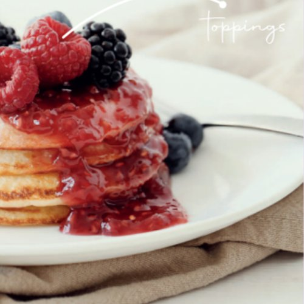
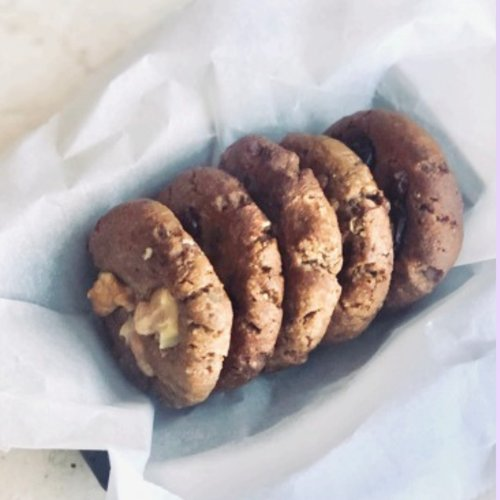
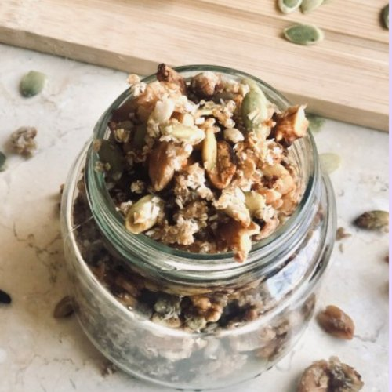
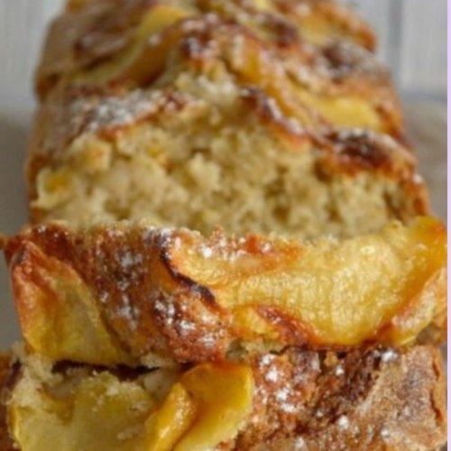
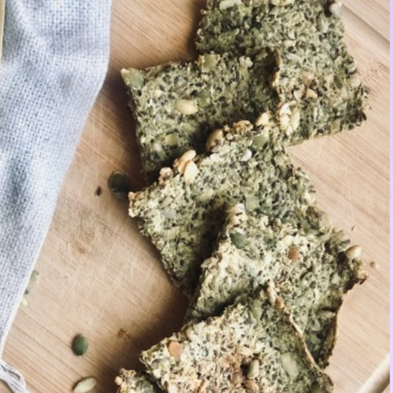
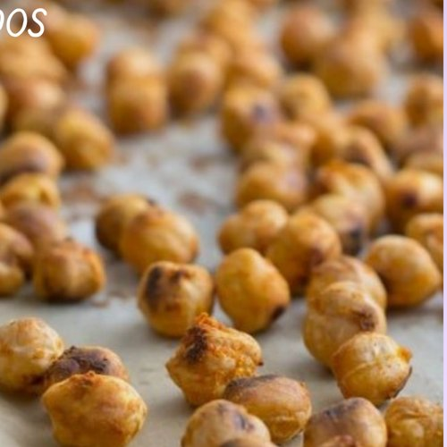

Esta guía no busca que cocines todo el domingo, peses cada alimento ni sigas un menú rígido. Busca que tengas decisiones resueltas antes de que llegue el momento de comer.
TE GUÍA
María Eugenia Ballini
Lic. en Nutrición · M.N. 11773 · Equipo RENOVA
Armé esta guía para hombres de más de 40 con poco tiempo que quieren comer mejor, cuidar el músculo y acompañar el entrenamiento, con comidas simples y alimentos que conseguís en cualquier súper.
Cómo usar esta guía
01
Aprendé lo básico
Capítulos cortos para entender qué poner en el plato.
02
Organizate
Planificá, comprá y prepará con un sistema simple.
03
Aplicalo 8 semanas
Cada semana: recetas, cómo combinarlas y lista de compras.
Organizar tu alimentación sirve para reducir decisiones de último momento, no para llenar tu agenda de reglas.
Organizarse es decidir con anticipación lo que suele aparecer cuando ya tenés hambre y poco tiempo: qué hay en casa, qué vas a llevar al trabajo, qué falta comprar y qué podés resolver en 15 minutos. Pensalo como un guardarropa: no usás siempre la misma combinación, pero tenés prendas que combinan entre sí.
Las cuatro piezas del sistema
01
Planificar
Mirar la agenda real y elegir qué comidas necesitan resolverse antes.
02
Comprar
Lo que vas a usar, en cantidades razonables y con alternativas.
03
Preparar
Adelantar componentes, no necesariamente platos completos.
04
Revisar
Ver qué funcionó, qué sobró y qué cambiar la semana siguiente.
Empezá por una sola comida. La que más improvisás. Prepará una opción principal y otra de respaldo, y probalo una semana.
ALIMENTACIÓN INTELIGENTE · MÉTODO 4002 · Armá tu plato
No hace falta memorizar listas de alimentos permitidos: alcanza con reconocer qué aporta cada grupo y combinarlo.
½ Verduras
¼ Proteína
¼ Carbohidratos
Mitad del plato: verduras crudas o cocidas, de distintos colores.
Un cuarto: proteína: carne, pollo, pescado, huevo, lácteos, legumbres o tofu.
Un cuarto: energía: arroz, papa, batata, pan, pastas, choclo, avena o legumbres.
Un toque de grasas: aceite de oliva, palta, frutos secos o semillas.
Para tomar: agua.
Paso a paso
Elegí la proteína que tengas disponible.
Sumá vegetales: frescos, congelados o de lata.
Definí la fuente de energía según tu hambre y tu actividad.
Dale sabor: hierbas, especias, limón o un poco de aceite.
El plato es una guía, no una regla exacta. Si entrenás, tenés mucha actividad o poco apetito, la distribución puede cambiar. Lo que importa es el conjunto del día.
ALIMENTACIÓN INTELIGENTE · MÉTODO 4002 · Armá tu plato
Después de los 40 el músculo se pierde más fácil si no se entrena y se come poca proteína. No hay una cantidad universal: depende de tu peso, tu actividad y tu salud. Revisá que cada comida tenga alguna fuente de proteína y, si querés una cifra para vos, consultala con un profesional. No hace falta empezar con suplementos.
Error frecuente: sacar el arroz, la papa, el pan o las frutas por miedo a los carbohidratos. Si entrenás, restringir energía sin criterio perjudica el rendimiento y la recuperación.
ALIMENTACIÓN INTELIGENTE · MÉTODO 4002 · Armá tu plato
No hace falta un batido ni una “ventana” de 30 minutos. Lo que más pesa es lo que comés en todo el día. Igual, ordenar las comidas cerca del entrenamiento ayuda a rendir y a recuperar.
Momento
Qué conviene
Ejemplos
1 a 3 horas antes
Una comida normal, con carbohidratos y algo de proteína.
Arroz con pollo, sándwich integral con huevo, avena con yogur.
Si entrenás temprano
Algo liviano o nada, según cómo te sientas.
Una fruta, un yogur, un café con tostadas.
Después
Tu próxima comida, con una fuente de proteína.
Almuerzo o cena del plan, o yogur con fruta y avena.
Durante
Agua. En sesiones de menos de una hora no hace falta más.
Botella a mano, tomá de a sorbos.
Lo que más ayuda al músculo
Proteína repartida en desayuno, almuerzo y cena, no toda a la noche.
Carbohidratos en los días de entrenamiento: son la energía para levantar peso.
Dormir 7 a 8 horas: la recuperación también es parte del plan.
Suplementos: no hacen falta para empezar. Si te interesan, consultalo con un profesional.
ALIMENTACIÓN INTELIGENTE · MÉTODO 4002 · Armá tu plato
Elegí la que tengas a mano. Usá la mano como medida: una palma de proteína, un puño de carbohidratos y verduras sin límite.
Antes de entrenar
Banana con yogur.
Tostadas con mermelada y un huevo.
Sándwich chico de pollo o atún.
Avena con leche y fruta.
Arroz o fideos con una porción chica de pollo.
Después de entrenar
Pollo, arroz y verduras.
Carne magra, batata y ensalada.
Pescado con papa o fideos.
Tortilla de 2 o 3 huevos con pan.
Yogur con avena y fruta.
Colaciones que suman proteína
Yogur con frutaQueso con galletas de arrozSándwich de atúnHuevos durosLeche con avenaFrutos secos + fruta
¿Entrenás y después no tenés hambre? Comé algo chico igual: un yogur o un vaso de leche. Es mejor que llegar a la cena sin haber comido nada desde el entrenamiento.
ALIMENTACIÓN INTELIGENTE · MÉTODO 4003 · Porciones y etiquetas
El menú útil no es el que se cumple al pie de la letra: es el que tiene alternativas cuando la semana cambia.
Primero la agenda, después el menú
Mirá el calendario: días de oficina, home office, reuniones, actividades familiares. Marcá cada comida como en casa, para llevar o comprar afuera. Eso define qué necesitás preparar.
El plan A, B y C
A
Día normal
Tenés tiempo: usás el menú planificado.
B
Día complicado
Vianda del freezer o una combinación de alacena.
C
Día afuera
Sabés dónde comprar o llevás algo transportable.
Ejemplo: Martín, 46 años, trabaja desde casa lunes y miércoles. Planifica solo tres almuerzos para llevar, deja una porción congelada para un imprevisto y decide antes dónde almorzar el viernes. Un plan menos ambicioso, y más fácil de cumplir.
Tiempos orientativos de SENASA. Ante la duda, consumí antes o congelá a tiempo.
Freezer a tu favor
Congelá lo que no vas a comer en los próximos días.
Rotulá con nombre y fecha.
Descongelá en la heladera, no sobre la mesada.
No vuelvas a congelar un alimento crudo ya descongelado.
Viandas
Llevalas en bolsa térmica con refrigerantes y guardalas en la heladera apenas llegues. Al recalentar, que quede bien caliente en todas partes: revolvé a mitad si usás microondas.
ALIMENTACIÓN INTELIGENTE · MÉTODO 4008 · Fuera de casa
El fin de semana no se arruina con un asado: se arruina cuando pasa a ser “días libres” sin estructura.
El asado, bien armado
Elegí cortes magros la mayoría de las veces: lomo, peceto, nalga, vacío desgrasado, pollo sin piel. Chorizo, morcilla y achuras, de vez en cuando.
La porción: la palma de tu mano, no medio kilo. Mitad del plato con ensaladas o verduras a la parrilla.
Pan y picada, medidos: serví una porción y alejá la panera.
El alcohol
Cuanto menos, mejor. Si tomás, intercalá un vaso de agua con cada vaso de alcohol.
Afecta el sueño y la recuperación: evitá tomar la noche anterior a entrenar.
Las calorías se suman sin darte cuenta: cerveza, fernet con gaseosa y vino también son comida.
La regla del fin de semana: mantené el desayuno y la proteína en cada comida, entrená o caminá el sábado o el domingo, y el lunes volvés al plan sin compensar.
ALIMENTACIÓN INTELIGENTE · MÉTODO 4007 · Técnicas de cocción
Una semana, un objetivo: no cambies todo junto; sumá un hábito por semana.
4 recetas por semana que se reutilizan: lo que cocinás para el almuerzo sirve para otra comida.
El cuadro de los 7 días es una idea, no una obligación. Movelo según tu agenda.
Desayunos y meriendas: elegí entre las opciones de la semana o las anteriores.
Las cantidades son orientativas y para personas sanas. Ajustalas a tu hambre y actividad.
Aclaración: estas semanas son etapas para aprender hábitos, no un tratamiento nutricional. Si tenés una enfermedad, tomás medicación o tenés antecedentes de trastornos de la conducta alimentaria, consultá con un profesional antes de cambiar tu alimentación.
Pequeños cambios sostenidos valen más que una semana perfecta.
Objetivo: Combinar alimentos para armar comidas completas: proteína, vegetales y una fuente de energía en cada plato.
Aprendizaje: No necesitás comer siempre lo mismo: necesitás aprender a combinar.
Tu semana, combinada
Día
Almuerzo
Cena
Lun
Ensalada tibia (receta 2)
Pescado al horno (receta 3)
Mar
Sobrante de pescado + ensalada
Tortilla simple + vegetales
Mié
Ensalada tibia
Carne magra + puré de zapallo
Jue
Milanesa al horno + ensalada
Sobras recalentadas + vegetales
Vie
Arroz + huevo + vegetales
Pescado al horno
Sáb
Comida libre en familia
Tostadas completas (receta 4)
Dom
Asado o almuerzo social
Sopa de verduras + queso
Desayunos y meriendas: Bowl de yogur, avena y fruta, Tostadas con queso, huevo y tomate, o yogur con fruta, tostadas con queso y huevo, fruta con frutos secos.
Organizate
Cociná una fuente de proteína para dos comidas.
Lavá y dejá listas las hojas verdes.
Hacé una bandeja de vegetales para usar en 2 o 3 platos.
Seis recetas del recetario de María Eugenia Ballini para sumar variedad a tus mañanas y tardes.

33
DESAYUNO O MERIENDA
Pancake de coco
10 min · 1 porción
Ingredientes
2 huevos (o 1 huevo y 1 clara)
5 cdas de coco rallado
1 cdita de polvo de hornear
Esencia de vainilla y gotas de stevia
Preparación
Batí todo enérgicamente para que no queden grumos.
Volcá en una sartén aceitada a fuego mínimo.
Cociná vuelta y vuelta. Toppings: fruta, frutos secos o pasta de maní.
Cambialo por: coco por avena; stevia por fruta pisada.

34
MERIENDA
Galletitas de 4 ingredientes sin azúcar
30 min · 8 a 10 galletitas
Ingredientes
¼ taza de harina de garbanzos
2 cdas de pasta de maní
4 dátiles sin carozo (remojados si están secos)
4 nueces picadas, 3 cdas de agua y ½ cdita de polvo de hornear
Preparación
Mezclá todo hasta formar una masa (si hace falta, enfriala un rato).
Formá las galletitas sobre una placa.
Horneá a 200 °C unos 20 minutos, hasta que estén doradas.
Cambialo por: dátiles por pasas remojadas; nueces por almendras.
Conservación: 3 a 4 días en recipiente hermético o 2 meses en freezer. ❄ Se puede freezar

35
DESAYUNO O MERIENDA
Granola de quinoa
35 min · Aprox. 6 porciones
Ingredientes
1 taza de quinoa cocida (⅓ taza cruda)
¼ taza de semillas de girasol y zapallo
¼ taza de frutos secos picados
¼ taza de coco rallado y 2 cdas de miel
Preparación
Lavá bien la quinoa, hervila hasta que esté transparente, colala y enfriala.
Mezclá con semillas, frutos secos, coco y miel.
Horneá en placa con papel manteca a 180 °C, revolviendo cada 5 minutos, unos 15 minutos.
Cambialo por: miel por azúcar mascabo o dulce de dátiles.
Conservación: 2 semanas en frasco cerrado.

36
MERIENDA
Budín de manzana, canela y nuez
45 min · 1 budín (6 porciones)
Ingredientes
3 a 4 cdas de avena
3 claras y 1 huevo
1 manzana en láminas finas
1 puñado de nueces, canela, stevia y 1 cdita de polvo de hornear
Preparación
Precalentá el horno a 180 °C.
Licuá todo menos la manzana y las nueces, y volcá en una budinera.
Acomodá la manzana y las nueces arriba y horneá unos 40 minutos.
Cambialo por: manzana por banana o pera.
Conservación: 3 a 4 días en heladera o 2 meses en freezer. ❄ Se puede freezar

37
SNACK SALADO
Crackers de semillas
1 h + hidratación · Aprox. 30 crackers
Ingredientes
½ taza de harina de garbanzos + ½ taza de agua
1 taza de chía y lino
1 taza y ½ de semillas de girasol, zapallo y sésamo
1 cda de aceite de oliva, ajo en polvo y curry
Preparación
Hidratá la harina de garbanzos con el agua entre 1 y 8 horas.
Mezclá con las semillas, el aceite y los condimentos.
Estirá fino en placa con papel manteca, marcá los cortes y horneá a 180 °C hasta que estén secos y dorados.
Cambialo por: condimentos a elección: orégano, pimentón, sésamo negro.
Conservación: 2 semanas en recipiente hermético.

38
SNACK SALADO
Snack de garbanzos tostados
35 min · 3 porciones
Ingredientes
1 lata de garbanzos (o 150 g secos, remojados y hervidos)
2 cdas de aceite de oliva
Orégano, pimienta, comino y sal
Preparación
Escurrí y secá muy bien los garbanzos.
Mezclalos con el aceite y los condimentos.
Horneá en placa con papel manteca a horno moderado 30 minutos, hasta que estén crocantes.
Cambialo por: probá con pimentón ahumado o curry.
Conservación: 4 a 5 días en frasco cerrado.
Conservación de lo casero (sin conservantes): lo horneado y seco (granola, crackers, galletitas, garbanzos tostados) dura 1 a 2 semanas en frasco hermético a temperatura ambiente; lo húmedo (budines, pancakes) va a la heladera y dura 3 a 4 días. Todo se puede freezar hasta 2 meses. Antes de comer, un golpe de horno de 5 minutos.
No se trata de prohibir ni de que un reemplazo sea automáticamente “más sano”: son alternativas según la preparación. Usalas cuando te sirvan.
En vez de…
Probá con…
Azúcar
Stevia, dulce de dátiles o pasas, o fruta madura (banana, manzana).
Harina blanca
Harina integral, de avena o de garbanzos (o una mezcla).
Manteca
Aceite de oliva o de girasol, palta o pasta de maní.
Crema o mayonesa
Yogur natural, queso untable o palta pisada.
Snacks de paquete
Garbanzos tostados, crackers de semillas, frutos secos o fruta.
Gaseosas y jugos
Agua, agua con frutas o menta, infusiones frías.
Pan rallado
Avena, semillas o harina de garbanzos.
Huevo (en budines)
Gel de chía o lino: 1 cda de semillas + 3 cdas de agua, 20 min.
Endulzantes: la equivalencia con el azúcar depende de cada producto (stevia en polvo, líquida o en sobres): seguí la indicación del envase. Dátiles, pasas y miel también aportan azúcares: usalos con moderación. La idea es ir usando cada vez menos para que tu paladar se adapte.
Selección de María Eugenia Ballini. Las marcas cambian: usá estos criterios con cualquier producto — ingredientes cortos, integral o con fibra como primer ingrediente, poca azúcar agregada y sodio moderado, y compará por 100 g. Hacé zoom para ver cada producto.
La constancia no se construye con semanas perfectas, sino con una estructura que te deje volver a empezar sin castigos.
La trampa del todo o nada
Una comida improvisada no arruina una semana. Volvé a la próxima decisión posible: si no llevaste vianda, elegí algo razonable donde estés; si no pudiste cocinar, usá tu menú de emergencia.
Una pausa antes de decidir
Frená un momento y alejate de la pantalla.
¿Qué necesitás? ¿Hambre, cansancio, aburrimiento, un descanso?
Respondé a eso: si es hambre, comé; si es cansancio, pausá.
Sin compensar: no saltees comidas ni sumes ejercicio como castigo.
La revisión de 10 minutos
Un día por semana: ¿qué preparación usé más?, ¿qué sobró?, ¿qué momento fue difícil?, ¿qué cambio chico hago la semana que viene?
ALIMENTACIÓN INTELIGENTE · MÉTODO 4010 · Sostener el cambio
Cuando el músculo no aparece o te sentís pesado, no cambies todo. Mirá las señales, elegí una causa y tocá una sola cosa.
Lo que notás
Causa probable
Qué cambiar
Rendís menos, te levantás apagado, el peso baja sin buscarlo.
Falta energía
Sumá un puño de carbohidratos antes o después de entrenar.
Comés bien una vez al día y el resto, liviano. No subís repeticiones.
Falta proteína repartida
Una palma de proteína en desayuno, almuerzo y cena.
Dormís mal, más dolores, te sentís pesado aunque comas igual.
Falta recuperación
Cena más liviana, menos grasa cerca del entrenamiento y priorizar el sueño.
El plan de 14 días
Días 1 a 3: anotá tu peso, cómo rendiste y tu energía del día.
Días 4 a 10: aplicá un solo cambio de la tabla.
Días 11 a 14: si mejoró, seguí igual dos semanas más. Si no, probá la causa siguiente.
Lo que no conviene: dietas extremas, cortar los carbohidratos de golpe o usar suplementos como base. Pedí ayuda si tenés presión, colesterol o glucemia altos, tomás medicación o tu relación con la comida o el alcohol te angustia.
Ministerio de Salud de la Nación — Guías Alimentarias para la Población Argentina y gráfica de alimentación saludable.
ANMAT — Recomendaciones para la manipulación segura de los alimentos.
SENASA / Argentina.gob.ar — Pautas de refrigeración y tiempos orientativos de conservación.
Argentina.gob.ar — Manipulación de alimentos y cadena de frío.
Ley 27.642 de Promoción de la Alimentación Saludable — etiquetado frontal de alimentos.
Material educativo general. Esta guía no reemplaza una consulta con un/a licenciado/a en Nutrición ni una evaluación médica. No establece calorías, porciones obligatorias, objetivos de peso ni cantidades individuales de nutrientes. Las necesidades cambian según tu historia clínica, actividad, preferencias, medicación y etapa de vida.
Revisión de contenidos: María Eugenia Ballini, Lic. en Nutrición · M.N. 11773.
Consultá por tu plan integral personalizado 1 a 1 con Nacho: entrenamiento y nutrición armados para vos, con MÉTODO 40 y la Lic. María Eugenia Ballini.